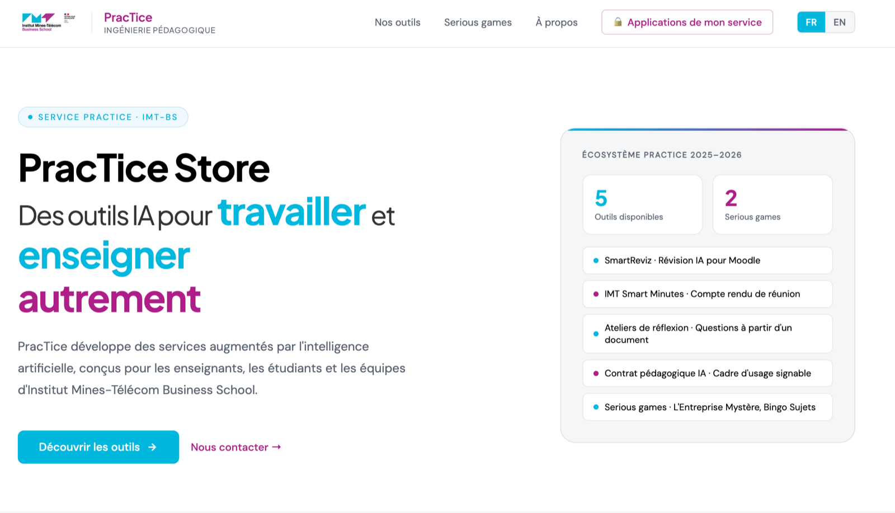

IRFASE · Executive Master · avec IMT Business School Executive Education
Prise en main des outils IA
Un dossier pour votre conseil d'administration, quatre marches pour voir ce que l'IA change déjà
Julien MORICE Responsable du service d'ingénierie pédagogique PracTice · IMT Business School
Vendredi 20 novembre 2026 · 14 h 30 - 15 h 30 · Évry-Courcouronnes
En partenariat avecIRFASE
Ouverture
Qui je suis
J'accompagne les enseignant·es et les services d'IMT Business School dans leurs usages de l'IA
Je forme les équipes des écoles du groupe IMT, d'Alès à Lille
Je fabrique des outils IA pour les services de l'école : admissions, scolarité, enseignant·es
Je ne suis ni informaticien, ni vendeur : je teste, je trie, je partage
Mon LinkedIn
20 novembre 2026IRFASE · Prise en main des outils IA
Ouverture · à main levée
Levez la main si…
✋vous avez déjà posé une question à ChatGPT, Le Chat ou Gemini
📅vous vous en servez au moins une fois par semaine au travail
📄vous y avez déjà déposé un document de votre établissement
📜votre structure a une règle écrite sur l'usage de l'IA
20 novembre 2026IRFASE · Prise en main des outils IA
Ouverture · le cas fil rouge
Votre association prépare son conseil d'administration
300salarié·es
Essonneplusieurs établissements
Protection de l'enfance · handicap · insertionle secteur social et médico-social
La question posée par le CA
Comment attirer et garder les professionnel·les ?
Le livrable : un dossier pour la prochaine séance. Un état des lieux, des leviers d'action, un tableau de bord. On le construit ensemble, marche après marche.
20 novembre 2026IRFASE · Prise en main des outils IA
Ouverture · le plan
Quatre marches à gravir
1
Chercher
ChatGPT
Un état des lieux sourcé, par la recherche approfondie
2
Exploiter
Gemini Notebook
Interroger ses propres sources, en écouter le résumé
3
Faire faire
Claude Cowork
Confier à un agent la note, le support et le tableau de bord
4
Fabriquer
Le PracTice Store
Construire l'outil de ses équipes, sur une IA souveraine
Palier · le regard du manager
Palier · où vont mes données ?
20 novembre 2026IRFASE · Prise en main des outils IA
Marche 1 · ChatGPT
Chercher
La recherche approfondie : l'IA lance elle-même des dizaines de recherches sur le web, lit les sources et rend un rapport argumenté, avec ses références.
Compter de 5 à 30 minutes. Elle existe aussi dans Gemini, Le Chat de Mistral et Claude.
1
2
3
4
20 novembre 2026IRFASE · Prise en main des outils IA
Marche 1 · le prompt Démo en direct
Une commande en quatre parties
Qui je suis
Je dirige une association du secteur social et médico-social en Essonne (300 salarié·es). Je prépare un dossier pour mon conseil d'administration…
Ce que je veux
Un état des lieux de la crise d'attractivité : l'ampleur, les causes, les conséquences, les réponses déjà engagées.
Mes sources
Sources institutionnelles françaises (DREES, Cour des comptes, fédérations…), depuis 2022, chaque chiffre daté et lié.
Le livrable
Un rapport lisible par des administrateur·rices bénévoles, une synthèse d'une page, un tableau des chiffres clés.
20 novembre 2026IRFASE · Prise en main des outils IA
Marche 1 · avant de chercher Démo en direct
D'abord, l'IA vous pose des questions
ChatGPTAvant de lancer la recherche : quelle période ? Plutôt le national ou l'Île-de-France ? Quels métiers en priorité ?
VousDepuis 2022. Le national, et l'Île-de-France quand les chiffres existent. Éducateur·rices, AES, cadres intermédiaires.
ChatGPTVoici mon plan de recherche. Je démarre ?
Répondre précisément, c'est ce qui fait la qualité du rapport. Puis on valide le plan, et l'IA part travailler seule.
20 novembre 2026IRFASE · Prise en main des outils IA
Marche 1 · en accéléré
De la commande au rapport
Vidéo · à commenter
La commande, le plan validé, des centaines de pages consultées, puis le rapport et ses sources, ouvertes une à une.
20 novembre 2026IRFASE · Prise en main des outils IA
Marche 1 · le résultat
Trois chiffres pour ouvrir le dossier
4,5 %
des postes vacants dans les établissements et services médico-sociaux
2,1 % en 2017 · CNSA, données 2023
24,4 %
de turnover en un an dans ces mêmes établissements
19,4 % en 2018 · CNSA, données 2023
1 sur 2
des éducatrices spécialisées a quitté le métier neuf ans après ses débuts
Entrées en 2011-2012 · DREES, mars 2025
Et en Essonne : 68,4 % des recrutements d'éducateur·rices spécialisé·es sont jugés difficiles par les employeurs (France Travail, 2026).
20 novembre 2026IRFASE · Prise en main des outils IA
Marche 1 · vérifier
Même source, deux salaires
Rapport 1, page 1
2 090 €
nets par mois, en équivalent temps plein, en 2023
✓ Retrouvé dans la publication DREES de septembre 2025
Rapport 1, page 2
1 395 €
nets par mois, en équivalent temps plein, en 2023
✗ Introuvable dans la source citée
Une recherche approfondie non vérifiée n'est pas un travail fait : c'est un travail délégué. Ouvrir les sources, vérifier les dates, traquer les chiffres qui se contredisent.
20 novembre 2026IRFASE · Prise en main des outils IA
20 novembre 2026IRFASE · Prise en main des outils IA
Marche 3 · Claude Cowork
Faire faire
Un agent : une IA qui ne se contente pas de répondre. Elle agit : elle ouvre des fichiers, enchaîne les étapes, produit des documents.
Un harnais : ce qui équipe l'agent. Un dossier de travail, des consignes écrites une fois pour toutes, des outils branchés.
1
2
3
4
20 novembre 2026IRFASE · Prise en main des outils IA
Marche 3 · le cas fil rouge Démo en direct
Une demande, trois livrables
« À partir des rapports du dossier, prépare pour le conseil d'administration une note de deux pages, un support de présentation et un tableau de bord de suivi. »
📝
La note au CA
Constat, leviers, dix actions classées par effort et impact. En Word.
20 novembre 2026IRFASE · Prise en main des outils IA
Marche 3 · le cas fil rouge, de bout en bout
Le contexte fait le travail
Vidéo muette ·
0:00
Le dossier de travailLe cas, les trois rapports de recherche, le README du projet.
0:20
La mémoire et les savoir-faireCLAUDE.md (qui je suis, mes règles) et le dossier des compétences.
0:32
Ouvrir Claude Code sur le dossierL'agent ne voit que ce qu'on lui confie.
0:44
Une demande d'une phraseLe contexte déjà en place dit le reste.
0:56
Le plan, puis le travailIl lit les rapports et coche ses étapes.
1:08
Trois livrables, en Word et en PDFLa note de deux pages, le support, le tableau de bord.
2:08
Puis un site modifiableMême conversation, même contexte, une demande de plus.
20 novembre 2026IRFASE · Prise en main des outils IA
Marche 3 · un agent au travail
L'agent enchaîne les étapes
Vidéo · à commenter
D'un script à une vidéo pédagogique : l'agent pose ses questions, découpe le texte, fait générer la voix et l'avatar dans d'autres outils, puis range les fichiers.
20 novembre 2026IRFASE · Prise en main des outils IA
Palier · le regard du manager
La surqualité devenue abordable
🗒️
Des comptes rendus
Chaque réunion d'équipe a son compte rendu structuré, avec un relevé de décisions.
🎨
Des supports
Des présentations soignées pour le CA, les financeurs, les partenaires.
📈
Des tableaux de bord
Les indicateurs RH suivis chaque mois, et non plus une fois par an.
Ce niveau de finition était réservé aux grandes structures. Le temps gagné se réinvestit auprès des équipes, et un humain relit toujours avant de diffuser.
20 novembre 2026IRFASE · Prise en main des outils IA
Palier · exemple
Le compte rendu en une phrase
Vidéo · à commenter
L'audio transcrit par Mistral, déposé dans un dossier, puis une seule demande : « Fais-moi le compte rendu de la réunion. » Le Word arrive, au modèle de l'école.
20 novembre 2026IRFASE · Prise en main des outils IA
Palier · où vont mes données ?
Trois familles d'IA, trois destinations
1 · L'IA frontière
Les plus puissantes
📄 Votre document→🌐 Serveurs du fournisseur
Des modèles fermés, le plus souvent américains, souvent traités hors d'Europe.
ChatGPT, Claude, Gemini
Pour quoi ?Ce qui est public ou anonymisé.
2 · L'open source
Les modèles ouverts
📄 Votre document→🖥️ Votre serveur
Des modèles téléchargeables, qui tournent chez vous ou chez un hébergeur que vous choisissez.
Mistral, Llama, Qwen, Gemma
Pour quoi ?Garder la main, si quelqu'un peut l'installer et l'entretenir.
3 · L'IA souveraine
Hébergée chez nous
📄 Votre document→🇪🇺 France ou Europe
Des modèles hébergés en France ou en Europe, sous droit européen, par un acteur de confiance.
ILaaS (enseignement supérieur), L'Assistant de l'État
Pour quoi ?Les données de personnes, à commencer par les personnes accompagnées.
20 novembre 2026IRFASE · Prise en main des outils IA
Palier · où vont mes données ?
Une règle à trois couleurs
Données publiques ou anonymiséesRapports, études, textes de loi
Tous les outils, versions gratuites comprises.
Documents internes sans nomOrganisation, budgets, projets
Offre professionnelle avec engagement écrit : pas d'entraînement sur vos données, hébergement en Europe.
Personnes accompagnées, dossiers RH, santéDes données sensibles
Jamais dans un outil grand public. IA souveraine ou locale, avis du ou de la DPO, hébergeur certifié pour les données de santé.
Avant d'acheterOù vont les données ? Servent-elles à entraîner le modèle ? Qui gère les accès ? Combien coûte l'usage réel ?
20 novembre 2026IRFASE · Prise en main des outils IA
Marche 4 · le PracTice Store d'IMT Business School
Fabriquer
Plutôt qu'un abonnement IA pour chacun·e, une application par besoin, construite pour une équipe et branchée sur une IA souveraine.
ILaaS : l'IA mutualisée de l'enseignement supérieur, des modèles ouverts hébergés par une fédération d'établissements.
1
2
3
4
20 novembre 2026IRFASE · Prise en main des outils IA
Marche 4 · le principe
Un besoin, une application
Aucun compte d'IA à créer : on ouvre l'application, c'est tout
Des données qui restent sur une IA souveraine
Un service, une équipe, parfois une seule personne
On paie à l'usage, pas un abonnement par personne
Exemples : comptes rendus de réunion, suivi de l'assiduité, réponses aux candidat·es

practice-imtbs.eu
20 novembre 2026IRFASE · Prise en main des outils IA
Marche 4 · exemple
Le compte rendu, devenu application
Vidéo · à commenter
Le même compte rendu que tout à l'heure, mais pour toute une équipe : on dépose l'audio, le compte rendu arrive par mail, rédigé par une IA souveraine.
20 novembre 2026IRFASE · Prise en main des outils IA
Marche 4 · et chez vous ?
Développer une application n'est plus le défi. Le défi, c'est que les équipes s'en servent.
Un besoin précis
Une tâche répétitive et pénible, que l'équipe vous signale elle-même.
Une IA de confiance
Hébergée en Europe, choisie avec votre DPO.
Quelqu'un qui entretient
En interne ou avec un partenaire : une application vit, s'ajuste, se maintient.
Des idées pour commencer : le compte rendu des réunions d'équipe, un assistant qui répond aux questions des salarié·es à partir du livret d'accueil, l'aide aux rapports d'activité.
20 novembre 2026IRFASE · Prise en main des outils IA
Clôture
Trois choses à essayer lundi
1
Lancer une recherche approfondie
Sur le sujet de votre prochain CA, avec la commande en quatre parties.
2
Ouvrir un carnet Gemini Notebook
Avec trois documents publics : un rapport, une étude, un texte de loi. Écouter le résumé audio.
3
Écrire votre règle à trois couleurs
Une page pour vos équipes, relue avec votre DPO.
20 novembre 2026IRFASE · Prise en main des outils IA
Merci
Vos questions
Scannez le QR code pour retrouver la présentation, ses liens et ses vidéos.
Julien MORICEService PracTice · IMT Business Schooljulien.morice@imt-bs.eupractice-imtbs.eu ↗
LinkedIn
practice-imtbs.github.io/presentation-irfase-ia
Recherche 1 · le prompt complet
L'état des lieux
Je dirige une association du secteur social et médico-social en Essonne (environ 300 salarié·es, plusieurs établissements : protection de l'enfance, handicap, insertion). Je prépare un dossier pour mon conseil d'administration sur les difficultés de recrutement et de fidélisation des professionnel·les.
Réalise un état des lieux documenté de la crise d'attractivité des métiers du social et du médico-social en France :
1. L'ampleur du phénomène : postes vacants, turnover, absentéisme, recours à l'intérim, baisse des candidatures dans les formations en travail social. Donne des chiffres récents et datés, au niveau national, et pour l'Île-de-France quand ils existent.
2. Les causes : rémunérations, conditions de travail, sens et reconnaissance, organisation, image des métiers, concurrence d'autres secteurs.
3. Les conséquences pour les personnes accompagnées, les équipes et les établissements.
4. Les réponses publiques et de branche déjà engagées (revalorisations salariales, travaux sur les conventions collectives, rapports et plans nationaux récents) et leurs limites.
Appuie-toi en priorité sur des sources institutionnelles et professionnelles françaises (ministères, DREES, Cour des comptes, Haut Conseil du travail social, fédérations employeurs, observatoires de branche, recherche académique), publiées de préférence depuis 2022. Cite chaque source avec son lien et sa date, signale les chiffres contradictoires ou incertains.
Livrable : un rapport structuré en français, lisible par des administrateur·rices bénévoles, avec une synthèse d'une page en tête et un tableau récapitulatif des chiffres clés (indicateur, valeur, année, source).
Recherche 2 · le prompt complet
Les leviers qui marchent
Je dirige une association du secteur social et médico-social en Essonne (environ 300 salarié·es, plusieurs établissements). Je dois proposer à mon conseil d'administration un plan d'action pour attirer et fidéliser les professionnel·les (éducateur·rices spécialisé·es, moniteur·rices-éducateur·rices, accompagnant·es éducatif·ves et sociaux·ales, cadres intermédiaires).
Recherche les leviers d'attractivité et de fidélisation qui ont fait leurs preuves, à la main d'un employeur associatif, sans attendre une décision nationale :
1. Recrutement : marque employeur, partenariats avec les écoles et instituts de formation, apprentissage et alternance, accueil des stagiaires, cooptation, reconversions.
2. Intégration et parcours : tutorat, formation continue, mobilité interne, évolution de carrière.
3. Conditions et organisation du travail : plannings, autonomie des équipes, temps de travail, logement, transport, garde d'enfants, prévention de l'usure professionnelle.
4. Reconnaissance et management : pratiques managériales, participation aux décisions, analyse des pratiques.
Pour chaque levier, cherche des exemples concrets d'associations ou d'établissements en France, et des expériences étrangères comparables (Belgique, Québec, pays nordiques, Pays-Bas), avec les résultats observés quand ils sont mesurés. Distingue clairement ce qui est évalué de ce qui relève du témoignage.
Livrable : un rapport en français avec, à la fin, un tableau comparatif des leviers (levier, exemple, coût estimé faible / moyen / élevé, délai de mise en œuvre, effet attendu, niveau de preuve, source) et une proposition de dix actions prioritaires classées par rapport effort / impact. Cite toutes les sources avec lien et date.
Recherche 3 · le prompt complet
Management et gouvernance
Je dirige une association du secteur social et médico-social (environ 300 salarié·es, plusieurs établissements). Mon conseil d'administration s'interroge sur ce que le management et la gouvernance peuvent changer, à moyens constants, pour que les professionnel·les restent.
Réalise une synthèse de ce que disent la recherche et les retours d'expérience sur le lien entre pratiques de management, gouvernance et fidélisation des équipes dans le secteur social, médico-social et sanitaire :
1. Les facteurs managériaux qui pèsent le plus sur l'intention de rester ou de partir : management de proximité, autonomie, charge administrative, sens du travail, conflits de valeurs, qualité du collectif.
2. Les modèles d'organisation qui donnent plus d'autonomie aux équipes (équipes autonomes ou semi-autonomes, délégation, subsidiarité, organisations dites « apprenantes ») : principes, exemples documentés en France et à l'étranger, résultats, conditions de réussite et échecs connus.
3. Le rôle de la gouvernance associative : place du conseil d'administration, délégations au directeur ou à la directrice et aux cadres, participation des salarié·es et des personnes accompagnées.
4. Les indicateurs qu'un conseil d'administration peut suivre pour piloter le sujet (turnover, ancienneté, absentéisme, postes vacants, climat social…).
Privilégie les travaux académiques (sciences de gestion, sociologie du travail), les rapports publics et les publications des fédérations du secteur, de préférence depuis 2018. Cite chaque source avec lien et date, et indique quand un résultat vient d'un autre secteur ou d'un autre pays.
Livrable : un rapport en français avec une synthèse d'une page, puis une proposition de tableau de bord « attractivité et fidélisation » de 8 à 10 indicateurs pour un conseil d'administration (indicateur, définition, mode de calcul, fréquence, seuil d'alerte).
Sommaire · cliquer pour aller à la slide · Échap pour fermer
← → naviguer · S sommaire · N notes · F plein écran · L copie locale